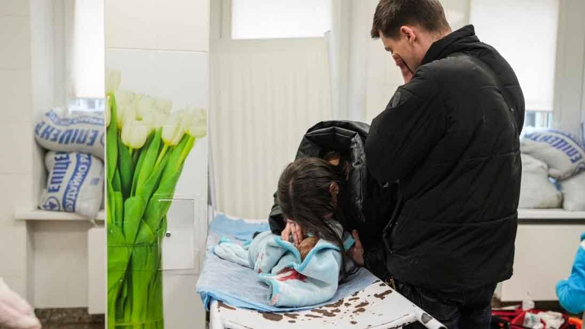
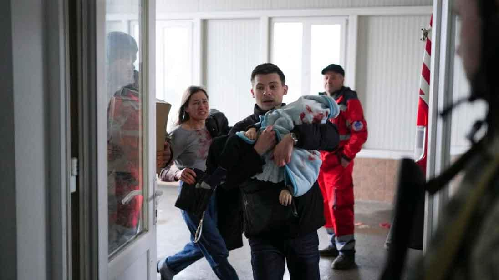

Humanitarian aid to Ukraine
International partners and organizations, if you have decided to provide humanitarian aid to ensure the national security, defense and civil protection of Ukraine due to Russia's invasion, we would like to inform you:


